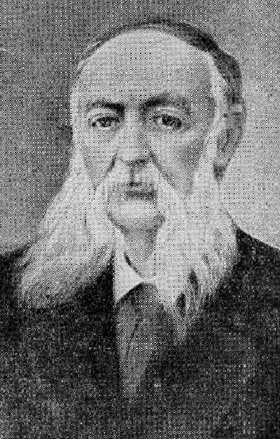
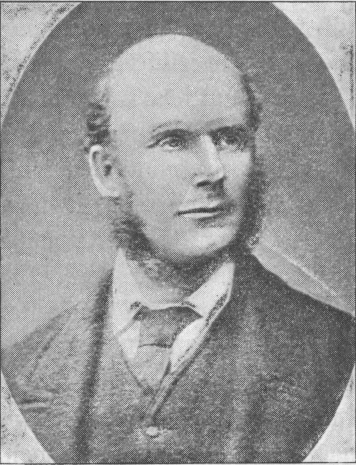

Evangelism

Evangelism refers to a religious movement originating in England that focused on spreading Christian values through charitable work and on loving one’s neighbor. These values were distinctly different from a traditional Russian religious attitude, which placed more emphasis on ritual and introspection.
In the 1870s, high society in Russia felt dissatisfied with the Orthodox Church. Orthodoxy was seen as formulaic and distant and did not satisfy people’s spiritual needs. In this environment, Radstockism, influenced by English evangelical practices, became popular in Russia. Unlike Orthodoxy, which did not involve constant bible reading or charity work, this English-accented version of Christianity emphasized doing good towards the poor and spreading the word of God to all. Doing charitable work became almost fashionable in Russia. For those who did not support Radstockism, this changing religious landscape underscored the need to reform Orthodox traditions (Knapp 126-127).
Tolstoy himself rejected the Orthodox establishment for its hypocrisy and falsity and felt that the Church had abandoned the central ethical tenets of Christianity. In the late 1870s, Tolstoy experienced a disillusionment with Orthodox religion, which he felt was degenerate, hypocritical, false, and amoral. He began developing a new version of Christianity, a moral and rational Christianity stripped of all supernatural elements. For Tolstoy, the true message of Christianity was loving one’s neighbors and abstaining from harm towards others (Walicki 335-337).
While Tolstoy rejected traditional Russian religious attitudes, he also felt that the English Evangelical tendency could be equally harmful, as people performed good works without being motivated by a true love of others. But at the same time, he respected those people who performed acts of charity out of genuine Christian love (Knapp 129).
Early drafts of Anna Karenina indicate that the roles of Varenka and Madame Stahl were originally played by an Englishwoman (Knapp 133). Tolstoy was strongly influenced by English novelists such as Dickens, Eliot, and Trollope. In early drafts, the Englishwoman Flora displays the kind of evangelical Christianity characteristic of England, not of Russia: she is passionate about helping the poor and spreading the word of God. Her behavior echoes literary works like Eliot’s Adam Bede and Janet’s Repentance. In the final version of the novel, Flora becomes the characters of Varenka and Madame Stahl. But even though Tolstoy abandons the explicit presence of English influence, Varenka’s version of faith still betrays a strong English flavor.
The historical context of evangelism also influences the character of Princess Lydia Ivanova. The novel portrays her as a deeply religious woman, often speaking of God and trying to convince others to find faith. Her zeal for instilling religion in Karenin speaks to her evangelical tendencies. But Tolstoy shows that the Princess’ religious feeling is false, superficial, and even hypocritical. For instance, she uses religious references to convince Karenin not to allow Anna to see her son, leading him away from true Christian love and forgiveness (Tolstoy 522). Furthermore, towards the end of the novel, the Princess delivers a flowery religious speech to Oblonsky and then performs a strange spiritual existence, calling on a sleeping Frenchman for advice (Tolstoy 738-740). In this almost humorous episode, Tolstoy explicitly shows that Princess Lydia’s view of religion, accented by evangelism, is totally misguided and ridiculous.
Through the figures of Varenka, Madame Stahl, and Princess Lydia Ivanova, Tolstoy demonstrates how Evangelism, when taken to extremes, devolves into a foolish and meaningless endeavor. Tolstoy’s engagement with, and criticism of, the historical context of evangelism is linked to a central idea of Anna Karenina: acting for the common good is useless. Characters like Levin, Anna, and Kitty all realize that good can only be done out of true, personal love for those close to home. Otherwise, it is as false, deceptive, and futile as the contrived religious ecstasies of Princess Lydia.

Works Cited
- Knapp, Liza. Anna Karenina and Others. University of Wisconsin Press, 2016.
- Walicki, Andrzej. A History of Russian Thought from the Enlightenment to Marxism. Clarendon Press, 1980.